مصمّمة مستقلة للإعلام
- إعداد تصاميم ومحتوى بصري للنشر عبر المنصات الرقمية.
- تطوير أفكار بصرية لحملات وموضوعات ذات نفع عام.
- المساهمة في تحويل الموضوعات المحلية إلى رسائل بصرية واضحة.
الإعلام الرقمي والتصميم العمل الإنساني هندسة البرمجيات
أتعلّم بسرعة: Flutter
«وَمَا تَوْفِيقِي إِلَّا بِاللَّهِ ۚ عَلَيْهِ تَوَكَّلْتُ وَإِلَيْهِ أُنِيبُ»

جهات وشركاء عملتُ معهم

إعلام القنيطرة
Vevo line
الراشدين
مؤسسة أثر
Diab Food01 نبذة
خريجة هندسة معلوماتية – هندسة البرمجيات من جامعة دمشق، أعمل في مجال الإعلام الرقمي والتصميم، مع خبرة في إعداد المحتوى البصري، وتنسيق المهام التقنية والإعلامية، وتنظيم المعلومات والملفات الرقمية. لديّ تجربة في العمل الإنساني والمبادرات المجتمعية، وأسعى إلى توظيف خلفيتي التقنية في تقديم محتوى واضح يخدم المؤسسات والقضايا المحلية.
02 الخبرة
مشروع «سبل العيش وتمكين الأشخاص ذوي الإعاقة» — الشركاء: مؤسسة أثر للتنمية والتطوير، Première Urgence Internationale (PUI)، وبرنامج الأمم المتحدة الإنمائي (UNDP)، بدعم تمويلي فنلندي.
العمل على تقارير المشاريع والملفات التقنية والإعلامية وتنظيم الملفات الرقمية.
شاركت في إعداد وكتابة مواد المحاضرات الجامعية.
مشرفة فريق ترويج (شباط 2022 – أيلول 2024)، وباحثة سوق .
03 المسار
بدأت دراسة هندسة تقانة المعلوماتية في جامعة حمص وانتقلت في السنة الثانية الى دمشق، وهي القاعدة التقنية التي بنيت عليها لاحقاً عملي في المحتوى والتنسيق.
انضممت إلى Diab Food باحثة سوق (حتى أيلول 2023) ومشرفة فريق ترويج (حتى أيلول 2024)، فتعلّمت العمل مع الناس والفرق ميدانياً.
بدأت العمل منسّقة تقنية وإعلامية في مكتب الراشدين للحج والعمرة، وما زالت في هذا الدور.
بدأت تعاوناً مستقلاً مع مديرية إعلام القنيطرة في التصميم والاتصال الرقمي، منذ نحو أربعة أشهر.
التعليم
04 المهارات
سرعة التعلّم
انتقلتُ من هندسة البرمجيات إلى الإعلام والتصميم، وأضيف إلى أدواتي باستمرار.
اللغات: العربية(أصلية)، الإنكليزية: (Intermediate)